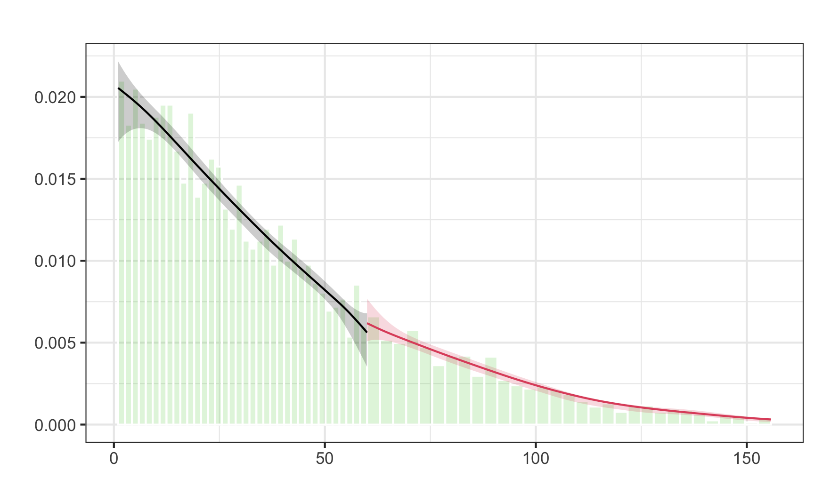

The next tool we introduce is called regression discontinuity design (RDD). Fist used in 1960 (Campbell), it did not play a large role until 1999 and since then has experienced growing acceptance due to the advance of more rigorous requirements regarding credibility and causality in social sciences. Another factor that made many researchers use RDDs is the increased availability of digitized administrative data that is often linked to arbitrary rules that can be exploited to capture “as-if” randomization processes for treatment assignment.
Assuming a data-generating process, where we have a variable \(X\) that is a confounder as it has an impact on treatment assignment \(D\) and the outcome \(Y\). Additionally, we could have an unobserved confounders between \(X\) and \(Y\).
Then, as can be seen in the second DAG, the regression discontinuity design exploits the fact that \(X\) determines \(D\) and data is filtered such that there are only observations that were close to a cut-off value determining their treatment status. This way, treated and untreated units are very similar and comparable and RDD is able to eliminate selection bias for that subpopulation. Note that the treatment effect you calculate using this method is an average treatment effect for a subgroup rather than for the whole population.
\(X\) is called the running variable and is a continuous variable assigning units to treatment \(D\) based on a cut-off score \(c_0\). Because it has an impact on \(Y\) as well, it is a confounder and opens a backdoor path. Now, the problem is that due to the cut-off determining the treatment \(D\), the backdoor cannot be closed with regular ways like e.g. matching as there is no overlap, i.e. there are no treated and untreated units for all levels of \(X\).
Therefore, as the second graph shows, the causal effect is identified by analyzing only observations that are in close neighborhood to \(c_0\). The identified treatment effect is the local average treatment effect (LATE).
\[
LATE_{RDD} = E[Y_1 - Y_0| X \rightarrow c_0]
\]
Continuity assumption
RDD relies heavily on the continuity assumption, which implies that the cut-off value is exogenous, i.e. there is no logic why the cut-off has to be at that particular level of \(X\). In other words, the rule was chosen arbitrary. Only if that is fulfilled, expected potential outcomes are almost the same for units just below and just above the cut-off (the only units that are analyzed). Even across the cut-off threshold, both \(E[Y_0|X \rightarrow c_0]\) and \(E[Y_1|X \rightarrow c_0]\) are continuous functions of \(X\).
Smooth and continuous functions of potential outcomes at the cut-off also implies that there are no other interventions or variables that occur at the cut-off and rules out omitted variable bias.
Graphically, we have illustrated the continuity assumption by removing the arrow from \(X\) to \(Y\). As all units have about the same value for \(X\), no effect from \(X\) on \(Y\) can be expected from those specific units. For \(X \rightarrow c_0\), there is no direct effect from \(X\) to \(Y\).
There are two different designs of RDD. Both have in common that the probability of treatment changes discontinuously at the threshold, but how strict the probability changes differs.
Sharp design: at the cut-off, probability changes from 0 to 1. All units below cut-off belong to control group, while all units above cut-off belong to treatment group (or the other way around).
Fuzzy design: at the cut-off, probability discontinuously increases. Most units below cut-off belong to control group, while most units above cut-off belong to control group (or the other way around). Here, cut-off is used as an instrumental variable.
The continuity assumption is crucial for conducting a valid RDD and that is why you have to ensure it is fulfilled. Violations can potentially happen when:
units know assignment rule in advance
units are interested in adjusting behavior according to assignment rule
units have enough time to adjust
other factors cause potential outcomes to shift at cut-off
nonrandom heaping along running variable
Nonrandom heaping - Example Marathon
Estimation and Inference
Research Design
RDDs are quite intuitive and very graphical. For this reason, we will go through estimation and inference using an application and explain at each step what has to be considered.
In the application, we want to analyze the effect of being graded “very good” instead of “good” on a restaurant review site. Customers leave reviews at this site for restaurants they have visited and the resulting average score (from 1 to 10) is phrased with a label. Restaurants with a score \([8,9)\) will receive the label “good”, while restaurants with a score of \([9, 10]\) receive the label “very good”.We will only focus on restaurants with a score larger than 8.
You might already see how we can use RDD in this application to identify the effect of a “very good” label on revenue. We can exploit the rule that there is a sharp cut-off for restaurants having a score just above or below 9. That means our cut-off value is \(c0 = 9\).
Let’s have a look at what the data looks like.
!!! INCLUDE COVARIATES?
head(df)
!!! DAG?
At first glance, it looks like all restaurants below the cut-off don’t have a “very good” label (indicated by FALSE) and the restaurants above cut-off do have it. We can visualize if that applies to all restaurants. As we have expected, to the left of the cut-off and to the right of the cut-off, there is always just one label type. It means, we are dealing with a sharp cut-off.
# [2] Visualization ----# [2.1] Compliance ----# As expected, perfect "compliance" and sharp cutoff. All # restaurants below the cutoff get a "good" rating, while all restaurants above# the cutoff get a "very good" rating.compl <-ggplot(df, aes(x = user_rating, y = rating_label, color = rating_label)) +geom_vline(xintercept = c0, color = ggthemr::swatch()[4]) +geom_point(alpha =1000/n, position =position_jitter(width =NULL, height =0.05)) +guides(scale ="none") +scale_y_discrete(labels =c("Good", "Very Good"))+scale_color_discrete(labels =c("Good", "Very Good")) +xlab("user rating") +ylab("") +theme(legend.title =element_blank())compl
Random assignment
As already mentioned, for RDD to deliver valid results we have to make sure there is no non-random heaping at the cut-off, i.e. no manipulation because for example the effect is known and units attempt to move to one side of the cut-off. We can plot the distribution around the cut-off to check for violations of the continuity assumption.
We can see that there is no decline or incline at the cut-off and therefore can assume that the continuity assumption holds.
# [2.2] Random assignment test ----# identifying assumption: random assignment to either side of cut-off# Manual plotggplot(df, aes(x = user_rating, fill = label)) +geom_histogram(binwidth = .1, color ="white", boundary = c0, alpha = .6) +geom_vline(xintercept = c0, color = ggthemr::swatch()[5], size =2, linetype ="solid")
Warning: Using `size` aesthetic for lines was deprecated in ggplot2 3.4.0.
ℹ Please use `linewidth` instead.
To check the continuity assumption more thoroughly, we can also use functions of the rddensity package. It relies on a test to check the assumption. as the p-value is large, we can reject the null hypothesis that the number of units at either side are different.
# Density test# Check for continuous density along running variable. Manipulations could # lead to running variable being "crowded" right after cutoff.library(rddensity)rddd <-rddensity(df$user_rating, c = c0)summary(rddd)
Manipulation testing using local polynomial density estimation.
Number of obs = 5000
Model = unrestricted
Kernel = triangular
BW method = estimated
VCE method = jackknife
c = 9 Left of c Right of c
Number of obs 2488 2512
Eff. Number of obs 709 840
Order est. (p) 2 2
Order bias (q) 3 3
BW est. (h) 0.178 0.199
Method T P > |T|
Robust 0.5829 0.5599
P-values of binomial tests (H0: p=0.5).
Window Length / 2 <c >=c P>|T|
0.003 8 12 0.5034
0.006 18 22 0.6358
0.008 27 35 0.3742
0.011 37 46 0.3800
0.014 50 58 0.5008
0.017 60 72 0.3384
0.019 79 85 0.6963
0.022 89 96 0.6592
0.025 100 111 0.4913
0.028 118 122 0.8465
It can also be shown graphically, where you can see that the confidence intervals overlap. If they did not overlap, we would have to suspect some kind of manipulation around the cut-off and could not use RDD to get valid results.
Warning: The dot-dot notation (`..density..`) was deprecated in ggplot2 3.4.0.
ℹ Please use `after_stat(density)` instead.
ℹ The deprecated feature was likely used in the lpdensity package.
Please report the issue to the authors.
Plot Treatment Effect
Having checked potential violations of the continuity assumptions, we can move on and estimate the treatment effect. We start with selecting a bandwidth, i.e. we select what and how many observations should be compared. The larger the bandwidth, the more observations are taken into consideration but it also reduces the comparability. On the other hand, choosing a small bandwidth results in a lower number of observations while ensuring similarity and comparability.
There is no safe rule how to best select the bandwidth, although there are algorithms attempting to look for the optimal bandwidth. For now, we just use common sense and select a bandwidth of 0.15, resulting in an analysis window \([8.85, 9.15]\), which still leaves us with about 1000 observations.
# [3] Dependent variable ----# [3.1] Average Treatment Effect ----# Plot regression lines for full and specified bandwidth.# Specify bandwidthbw <- c0 +c(-0.15, 0.15)# Subsets below and above threshold in specified bandwidthdf_bw_below <- df %>%filter(user_rating %>%between(bw[1], c0))df_bw_above <- df %>%filter(user_rating %>%between(c0, bw[2]))df_bw <-bind_rows(df_bw_above, df_bw_below)dim(df_bw)
[1] 1268 6
To illustrate the difference between using only a small window and all data, we plot the resulting regression lines. You can see that both approaches would lead to different results.
# Plot dependent variable vs running variabledep_var <-ggplot(df, aes(x = user_rating, y = revenue, color = rating_label)) +geom_vline(xintercept = c0, color = ggthemr::swatch()[5]) +geom_vline(xintercept = bw[1], color = ggthemr::swatch()[5], linetype ="dashed") +geom_vline(xintercept = bw[2], color = ggthemr::swatch()[5], linetype ="dashed") +geom_point(alpha =1000/n, size =0.5) +# add lines for the full rangegeom_smooth(data =filter(df, user_rating <= c0), method ="lm", se = F, size =1, linetype ="dashed") +geom_smooth(data =filter(df, user_rating > c0), method ="lm", se = F, size =1, linetype ="dashed") +# add lines for specified bandwidthgeom_smooth(data = df_bw_below, method ="lm", se = F, size =2) +geom_smooth(data = df_bw_above, method ="lm", se = F, size =2) +scale_color_discrete(labels =c("Good", "Very Good")) +xlab("user rating") +ylab("revenue") +theme(legend.title =element_blank())dep_var
`geom_smooth()` using formula = 'y ~ x'
`geom_smooth()` using formula = 'y ~ x'
`geom_smooth()` using formula = 'y ~ x'
`geom_smooth()` using formula = 'y ~ x'

From the plot above, it is hard to see what the difference between observations close to the cut-off is. So what we can do is to compute to regressions, one for the observations in \([8.85, 9)\) and another one for the observations in \([9,9.15]\).
Then, using the resulting coefficients, we compute what both models predict for the cut-off value \(c0\) and take the difference. The difference is the local average treatment effect (LATE).
# [3.2] Local Average treatment effect (LATE) ----# Extract values for vertical lines to visualize local average treatment effectmodel_bw_below <-lm(revenue ~ user_rating, df_bw_below)model_bw_above <-lm(revenue ~ user_rating, df_bw_above)y0 <-predict(model_bw_below, tibble(user_rating = c0))y1 <-predict(model_bw_above, tibble(user_rating = c0))late <- y1 - y0late
1
25
It’s a bit messy when we plot all observations, so let’s zoom in to see if we can detect the local average treatment effect graphically. Not surprisingly, it is equal to what we have just computed.
# Minimum and maximum for y-axis limitsmin_y <-min(df_bw$revenue)max_y <-max(df_bw$revenue)# Add lines for vertical distance and change limits of x-axis.dep_var_bw <-ggplot(df_bw, aes(x = user_rating, y = revenue, color = rating_label)) +geom_vline(xintercept = c0, color = ggthemr::swatch()[5]) +geom_point(alpha =0.2, size =1) +geom_smooth(data = df_bw_below, method ="lm", se = F, size =2) +geom_smooth(data = df_bw_above, method ="lm", se = F, size =2) +theme(legend.position ="bottom") +geom_segment(aes(x = bw[1], xend = c0, y = y0, yend = y0),linetype ="dashed", color = ggthemr::swatch()[7], size =1.5) +geom_segment(aes(x = bw[1], xend = c0, y = y1, yend = y1),linetype ="dashed", color = ggthemr::swatch()[7], size =1.5) +annotate("text", x = c0 -0.05, y =mean(c(y1, y0)),label =sprintf("Difference: %.2f", late), fontface =2) +scale_y_continuous(limits =c(min_y, max_y)) +scale_color_discrete(labels =c("Good", "Very Good")) +xlab("user rating") +ylab("revenue") +theme(legend.title =element_blank())dep_var_bw
`geom_smooth()` using formula = 'y ~ x'
`geom_smooth()` using formula = 'y ~ x'
Estimate Treatment Effect
Parametric Estimation
What you will see most in studies is a regression to compute the LATE. Here, we prefer to use user_rating_ct, which is the raw user_rating variable centered, i.e. subtracted by the cut-off value \(c0\). That simplifies the interpretation, however, it does not change the coefficient of interest, the LATE.
The coefficient we are most interested in is the one for rating_labelTRUE. It is equal to the effect in the plot above, but the regression summary also yields additional statistical information. We see that the LATE is statistically significant.
Call:
lm(formula = revenue ~ user_rating_ct + rating_label, data = df_bw)
Residuals:
Min 1Q Median 3Q Max
-106.67 -28.59 0.19 28.25 103.00
Coefficients:
Estimate Std. Error t value Pr(>|t|)
(Intercept) 90.00 2.36 38.18 < 2e-16 ***
user_rating_ct 2.84 25.62 0.11 0.91
rating_labelTRUE 24.96 4.31 5.80 8.5e-09 ***
---
Signif. codes: 0 '***' 0.001 '**' 0.01 '*' 0.05 '.' 0.1 ' ' 1
Residual standard error: 38 on 1265 degrees of freedom
Multiple R-squared: 0.1, Adjusted R-squared: 0.0987
F-statistic: 70.4 on 2 and 1265 DF, p-value: <2e-16
Non-parametric Estimation
You can also use non-parametric estimation techniques, i.e. we do not fit a line through the data but instead a curve. The R package rdrobust is a good resource that is easy to use. We just have to provide the dependent variable, the running variable and the cut-off value.
By default, the rdrobust() function automatically selects a bandwidth and uses a kernel weighting function (triangular kernel).
# [4.2] Non-parametric ----library(rdrobust)nparam_bw <-rdrobust(y = df_bw$revenue, x = df_bw$user_rating, c = c0)summary(nparam_bw)
Sharp RD estimates using local polynomial regression.
Number of Obs. 1268
BW type mserd
Kernel Triangular
VCE method NN
Number of Obs. 636 632
Eff. Number of Obs. 214 207
Order est. (p) 1 1
Order bias (q) 2 2
BW est. (h) 0.048 0.048
BW bias (b) 0.076 0.076
rho (h/b) 0.634 0.634
Unique Obs. 636 632
=============================================================================
Method Coef. Std. Err. z P>|z| [ 95% C.I. ]
=============================================================================
Conventional 29.892 8.322 3.592 0.000 [13.582 , 46.203]
Robust - - 3.111 0.002 [11.487 , 50.600]
=============================================================================
To check how the curve goes through the data, we can use rdplot(), which splits the data into bins and for each bin shows an average data point. We see that the curve fits the data very well.
rdplot(y = df$revenue, x = df$user_rating, c = c0)
There are a lot of options with the rdrobust() function, e.g. we can change the kernel and see how it affects the result.
# Use other kernelnparam_bw_kernel <-rdrobust(y = df_bw$revenue, x = df_bw$user_rating, c = c0, kernel ="epanechnikov")summary(nparam_bw_kernel)
Sharp RD estimates using local polynomial regression.
Number of Obs. 1268
BW type mserd
Kernel Epanechnikov
VCE method NN
Number of Obs. 636 632
Eff. Number of Obs. 204 199
Order est. (p) 1 1
Order bias (q) 2 2
BW est. (h) 0.046 0.046
BW bias (b) 0.075 0.075
rho (h/b) 0.606 0.606
Unique Obs. 636 632
=============================================================================
Method Coef. Std. Err. z P>|z| [ 95% C.I. ]
=============================================================================
Conventional 30.892 8.286 3.728 0.000 [14.652 , 47.132]
Robust - - 3.257 0.001 [12.846 , 51.681]
=============================================================================
Bandwidth robustness test or sensitivity
Kernel robustness test
Assignment
There are a lot of parameters that can be changed when using RDD. Change the bandwidth (for example only half the bandwidth or double the bandwidth) and compare how sensitive the original estimate is to those changes.
Load this data set and check for potential violations of the continuity assumption. Find possible explanations for violations.